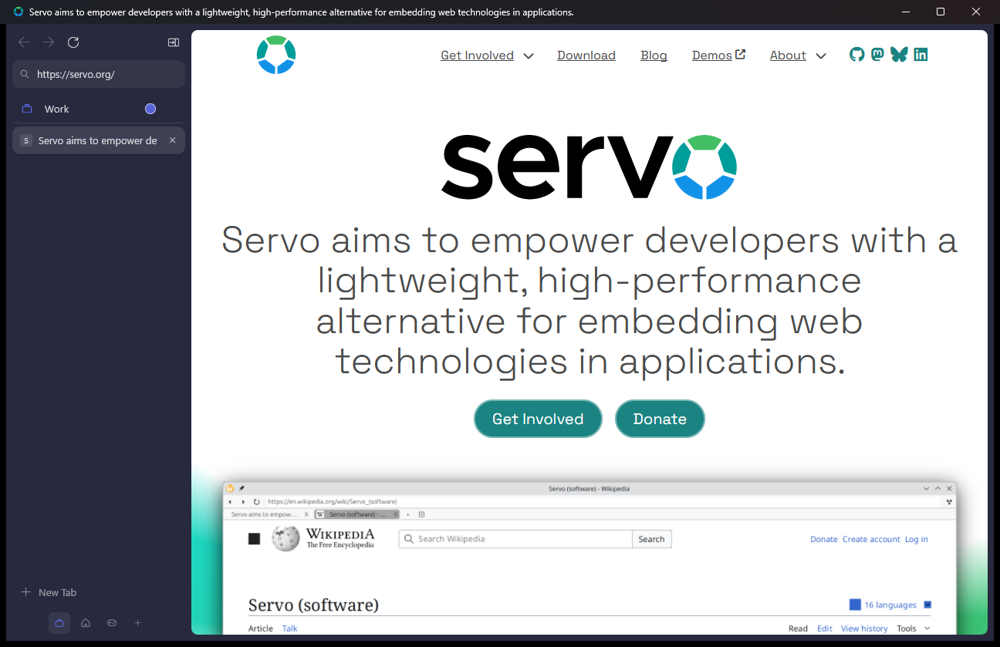

Stillwater
A calm, lightweight browser built on Servo. Vertical tabs, spaces that each have their own colour, and a Rust engine underneath.
The browser mock is live: click its coloured dots to switch spaces.
The real thing, running on Servo
Stillwater's sidebar is itself a web page. Servo draws it next to the site you're visiting, the same way Firefox draws its own interface with its engine. There's no Chromium or Gecko anywhere in the stack.

What it does today
-
Vertical tabs
Favicons, titles, a close button on hover, and middle-click to close. The URL bar sits at the top of the sidebar.
-
Spaces
Group tabs into spaces with their own name, icon and colour. Switch with a click or Ctrl Alt 1–9. Your spaces are remembered between launches.
-
Compact mode
Press Ctrl Alt C to hide the sidebar. Touch the left edge of the window and it slides back.
-
Pages as cards
Sites sit in a rounded, inset frame on the tinted window background, so the browser's own interface stays out of the way.
-
Keyboard first
Ctrl L to type an address, Ctrl T and Ctrl W for tabs. Tab shortcuts stay inside the space you're in.
-
Light and dark
Follows your Windows theme, with colours adapted from Zen Browser's open-source styles.
Build it yourself
The quickest way to try Stillwater is the Windows download: extract the zip and run servoshell.exe. To change it, build from source the same way as Servo. The first build takes a while; after that, rebuilds take seconds.
Windows is the tested platform. You need Git, Rust from rustup, uv, and Visual Studio with the C++ desktop workload.
- Clone the repository and open a PowerShell window in it.
- Run
.\mach bootstrapto install LLVM, CMake, GStreamer and the rest. - Run
.\mach build --release. - Start
servoshell.exefromtarget\release.
# PowerShell
git clone https://github.com/WhoaThatCombo/stillwater.git
cd stillwater
.\mach bootstrap
.\mach build --release
.\target\release\servoshell.exe https://servo.org
# Servo needs the MSVC Rust toolchain on Windows.
# If yours defaults to *-windows-gnu:
rustup set default-host x86_64-pc-windows-msvcWhat it can't do yet
Stillwater is a hobby project on top of an engine that's still maturing. Some sites will look wrong or not load. There are no extensions, no DRM video like Netflix, and open tabs aren't restored after you close the browser.
Next up: split view, session restore, and moving tabs between spaces. Ideas and bug reports are welcome on GitHub.